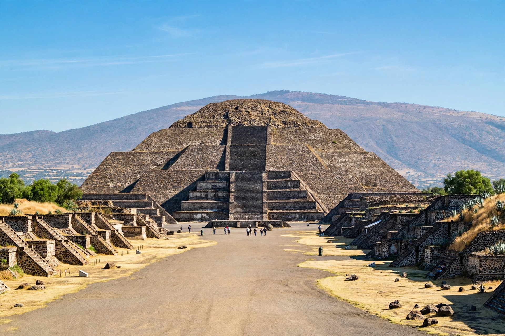

The Pyramid of the Moon is the second-largest pyramid at Teotihuacan, Mexico, located at the northern end of the Avenue of the Dead. Built in stages between about 100 and 450 CE, it mimics the profile of the Cerro Gordo mountain behind it and was associated with water, fertility and a great goddess. It stands about 43 metres high with a base roughly 147 by 130 metres.

Tunnels excavated by archaeologists (notably under Saburo Sugiyama and Rubén Cabrera) revealed successive construction phases and dedicatory burials containing sacrificed humans and animals, obsidian and greenstone offerings — evidence of state ritual and warfare ideology at Teotihuacan.